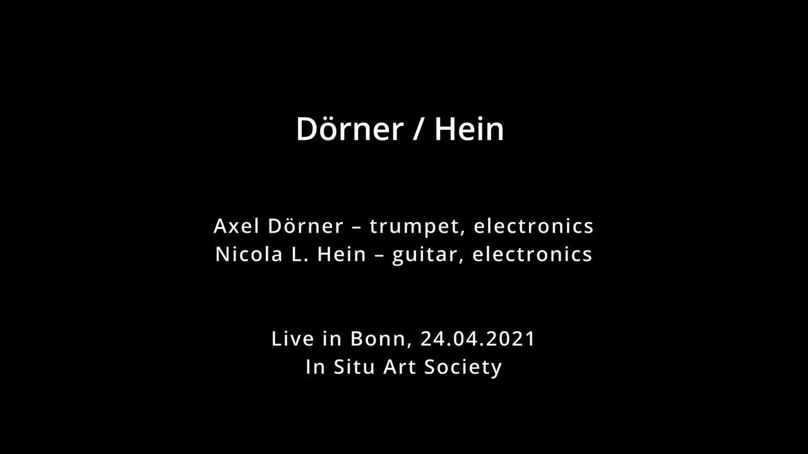
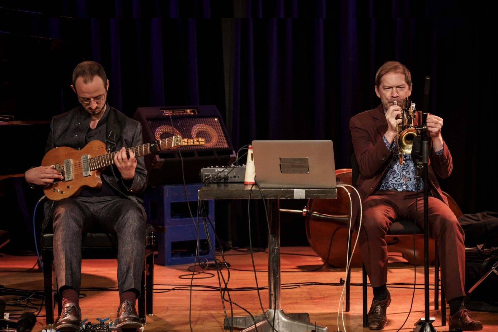

Dörner/Hein
Project Description
Axel Dörner – trumpet, electronics
Nicola L. Hein – guitar, electronics
The duo of Nicola L. Hein and Axel Dörner unites two busy players on the international scene of improvised music. They perform with an extended pallet of sounds and techniques, multichannel electronics as well as the cybernetic interaction between human musicians and artificial intelligence.
For this project they developed intelligent software environments, which spatialise the musical gestures on multichannel systems and in real time are able to learn and transform the human sonic gestures into complex fields of musical potentials.
Interacting with their own software alter ego’s, they develop a unique musical language that is characterized by its genesis out of a mixed human machine agency.
For NIME 2022 we will show a 10 minute video of one of our performances.
Type of Submission
“New NIME”
Program Notes
Axel Dörner – trumpet, electronics
Nicola L. Hein – guitar, electronics
The duo of Nicola L. Hein and Axel Dörner unites two busy players on the international scene of improvised music. They perform with an extended pallet of sounds and techniques, multichannel electronics as well as the cybernetic interaction between human musicians and artificial intelligence.
For this project they developed intelligent software environments, which spatialise the musical gestures on multichannel systems and in real time are able to learn and transform the human sonic gestures into complex fields of musical potentials.
Interacting with their own software alter ego’s, they develop a unique musical language that is characterized by its genesis out of a mixed human machine agency.
Media
Live Video of Nicola L. Hein and Axel Dörner:
https://youtu.be/Ne4zCvXz7Og

▶

Ethics Statement
Herewith we confirm to be conforming to the NIME ethical standards, including the authenticity of our artistic work and research, recognising the importance of individual persons and data as an expression of personhood. We adhere to the Vancouver guidelines,
thus ensuring that the authorship is limited to those who have made a significant
contribution to the conception of this piece. All co-authors have read and approved of the final version of the manuscript and have agreed to its submission. Furthermore concerns of inclusivity, accessibility, animal rights, socio-economic fairness, and environmental awareness have been consulted in my research.
Inclusivity: We attempt to be as inclusive in the choice of artists we collaborate with in the project and research.
Accessibility: In choosing concert venues, concerns of accessibility are of great importance to our collaboration with concert venues. Furthermore, we think that online performances increase the accessibility of musical performances, as they can easily be viewed and experienced by people with limited mobility and people of different abilities.
Environmental awareness: We attempt to be responsible and sustainable in our use of electronic tools and energy. However, as our work in electronic music and time based media art requires the use of electronic tools, there would space for improvement by the use of future technologies and sourcing of resources.
Socio-economic fairness: We attempt to adopt FLOSS/FLOSH access to the software that we program for our artistic work.
As we am not working with animals in my research or artistic project, concerns for animal rights only apply as general underlying concerns to my work but not as guidelines for the content and production of my work. But similar concerns apply to animal rights as to environmental awareness.
Data & privacy: For our submission, we have gained consent for the use of personally-identifiable data/media, acknowledge the use of open data wherever needed. We hope to make our software openly available in the future.